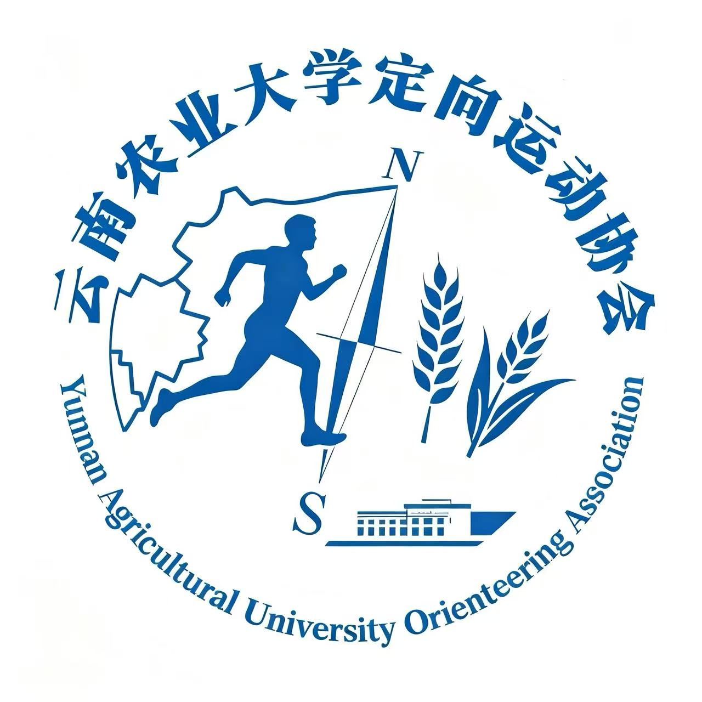
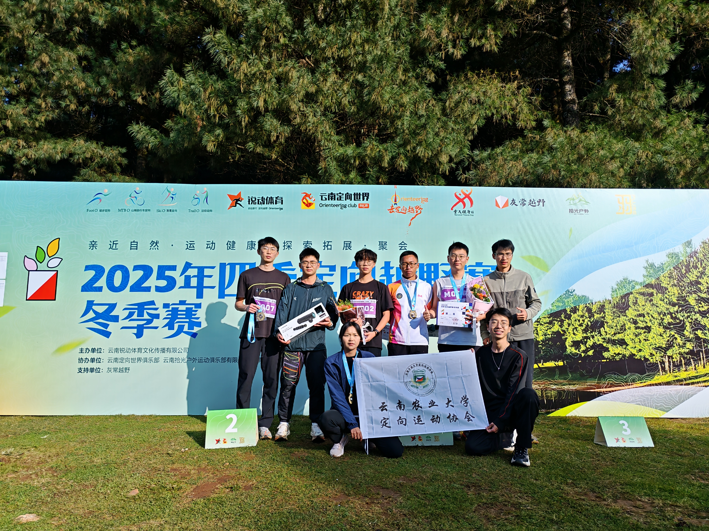
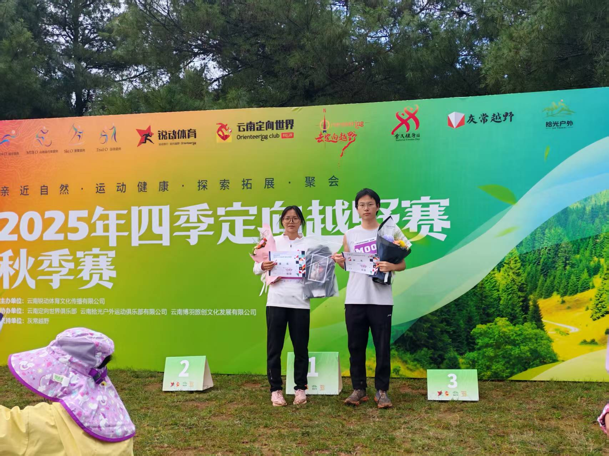
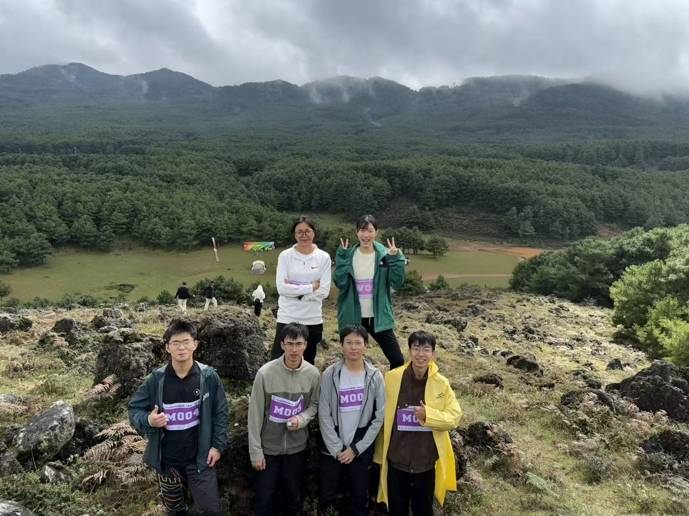
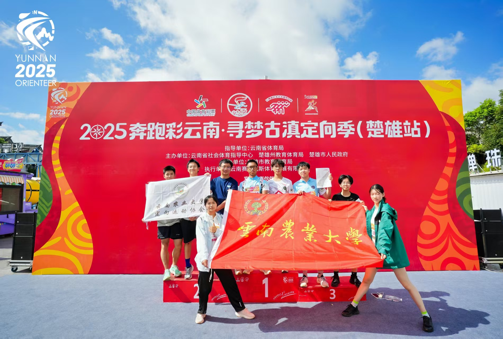
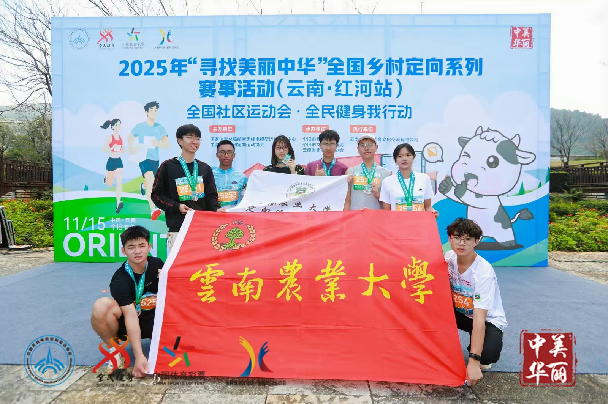
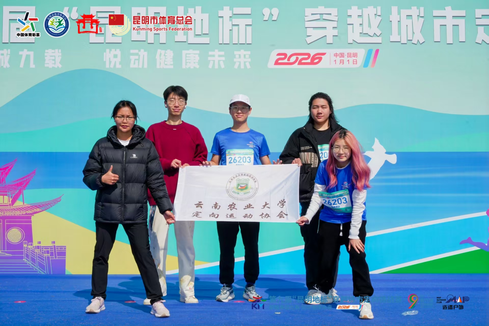

竞训部
负责日常体能集训、定向识图实操教学，筛选队员组建参赛梯队，带队外出拉练、参与各级赛事。
核心训练
我们是谁
本社团成立于2019年，以普及定向越野运动、传授地图识图导航技巧、增强学生身体素质为宗旨，面向全校各学院招募户外体育爱好者，长期在校内开展基础体能集训、定向识图理论教学，同时定期组织社员前往校外山林场地开展野外实操拉练。
近年来，社团围绕日常训练储备与竞技赛事实践两大方向推进品牌建设，校内常态化开展耐力、协调性体能训练夯实基础，校外实地训练打磨点位打卡、路线规划实战能力；社团还会从社员中择优选拔组建竞技代表队，参与各级别学生定向运动赛事并多次取得优异成绩，形成了校内练体能、校外练实操、梯队冲赛事的发展特色。
社团成员覆盖全校多个学院，兼顾零基础新手入门教学与竞技队员专项培养。未来，社团将持续优化训练计划，丰富校内外实践活动，带领社员在定向运动中锤炼野外判断与抗压能力，积极助力校园阳光体育文化发展。
组织架构
负责日常体能集训、定向识图实操教学，筛选队员组建参赛梯队，带队外出拉练、参与各级赛事。
核心训练策划校内定向活动与校外外出训练行程，撰写活动方案，统筹活动流程、场地点位规划。
活动策划负责社团海报、推文制作，活动拍照记录，运营社交平台，对外宣传社团赛事与日常动态。
品牌传播管理社员考勤、人员档案，统筹活动签到、现场秩序，负责社团内部人员调度与团建组织工作。
组织保障活动剪影
从校内理论课堂到野外山林拉练，从赛前技术会议到领奖台高光时刻。
每一帧都是定向运动协会的生动注脚。
品牌项目

01定向运动协会的成员自行驾车前往大哨森林参加野外森林定向比赛。秋赛与冬赛连轴举办，社员在真实山林环境中识图、找点、冲刺，把课堂所学的定向技能转化为野外实战能力。



02定向运动协会成员由体院徐老师带领前往楚雄参加为期两天的定向比赛。在古滇文化氛围中，社员与省内外选手同场竞技，积累了宝贵的赛事经验。
省级赛事 · 古滇文化 · 带队实战
03定向运动协会成员一同前往红河个旧参加全国乡村定向系列赛。在乡村田野与街巷之间穿梭打卡，感受定向运动与乡村振兴、文旅融合的独特魅力。
全国赛事 · 乡村定向 · 文旅融合
04定向运动协会成员组队参加“穿越城市”团队赛。从山林切换到城市街巷，用脚步丈量昆明地标，在团队配合中完成打卡挑战，展现云农学子的定向风采。
城市定向 · 团队赛 · 地标打卡竞赛成果
荣誉奖项正在整理收录中
社团成员已在四季定向越野赛、奔跑彩云南、寻找美丽中华、昆明地标穿越城市挑战赛等赛事中完赛并取得优异成绩，更多精彩敬请期待。